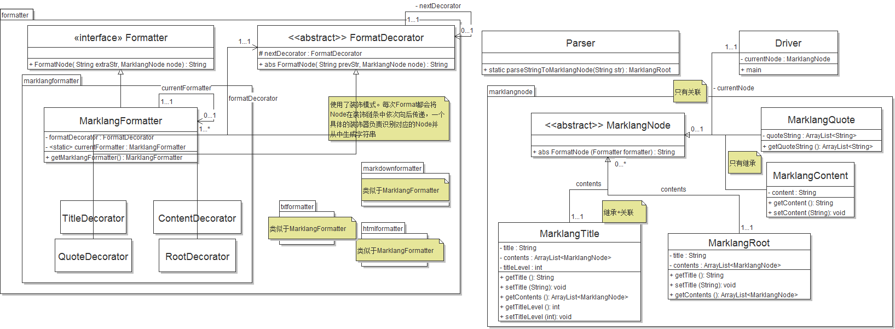

marklang 的需求与需求分析
Table of Contents
1 需求
1.1 marklang 工具
marklang 既指一个简易标记语言（其实是一个自创的 markdown 的简化版），又指这个语言的语法分析与代码转换工具。本工具将实现以下功能：
- 可以使用 java 代码生成 marklang 的语法树
- 可以从 marklang 源文件生成其语法树和将语法树保存成 marklang 源代码
- 可以从 marklang 生成其他的对应代码，比如 markdown、HTML 和 txt
- 提供扩展接口，第三方可以很容易地扩展类的功能，比如：
- 提供新的语法
- 提供新的 Formatter
- 扩展或修改现有的 Formatter
1.2 marklang 语言
本语言类似于 markdown，提供了以下功能：
1.2.1 层次段落和段落小标题
类似 markdown，以 # 打头的行表示标题，有几个 # 表示几级标题。比如：
#一级标题 1 正文第一行 正文第二行 ##二级标题 1 正文第一行 正文第二行 ##二级标题 2 #一级标题 2
1.2.2 引用内容
在某一行打头的时候使用三个反引号（ ``` ）来表示引用的开头，成对的另三个反引号表示引用的结尾，例如：
``` 引用的内容 1 引用的内容 2 ```
1.2.3 总结
即，我们的程序应该可以解析下面的代码（我命名为 test.ml ）：
标题 #第一节 正文 1 正文 2 ``` 引用 1 引用 2 ``` #第二节 ##2-1 正文 3 ##2-2 正文 4
可以生成这样的 HTML：
<!doctype html> <html> <head> <title>标题</title> </head> <body> <h1>第一节</h1> 正文 1 <br /> 正文 2 <br /> <blockquote> 引用 1 <br /> 引用 2 <br /> </blockquote> <br /> <h1>第二节</h1> <h2>2-1</h2> 正文 3 <br /> <h2>2-2</h2> 正文 4 <br /> </body> </html>
这样的 markdown：
# 标题 ## 第一节 正文 1 正文 2 > 引用 1 > 引用 2 ## 第二节 ### 2-1 正文 3 ### 2-2 正文 4
和这样的文本文件：
标题
==========
# 第一节
==========
正文 1
正文 2
引用 1
引用 2
# 第二节
==========
## 2-1
==========
正文 3
## 2-2
==========
正文 4
2 需求分析（粗略）
2.1 语法树部分
2.1.1 一个用于表示文档根的类 MarklangRoot
- 含有一个列表，列表中存储了其他的文档元素，列表各个项目之间是并列关系
- 有一个单独的属性表示文档名，类型为字符串
2.1.2 标题类 MarklangTitle
- 一个属性表示标题，类型为字符串
- 一个列表，其中存储了其它的文档元素，列表各个项目之间是并列关系
- 一个数字，表示目前是第几级标题
2.1.3 内容类 MarklangContent
- 一个字符串来表示内容
- 如果某一级标题下有多行内容，每一行内容都是一个内容类
2.1.4 引用类 MarklangQuote
- 一个字符串列表来存储引用的内容
- 列表中的每个元素表示其中的一行
2.2 语法处理部分
2.2.1 语法处理类 Parser
- 负责将一个字符串中的 Marklang 代码处理成语法树，提供一个静态方法
- 返回一个 MarklangRoot 类
2.3 Formatter
2.3.1 接口 Formatter
- 提供一个方法，将 Marklang 转换成对应的语言的字符串
- 使用单件模式
2.3.2 HTMLFormatter
2.3.3 MarkdownFormatter
2.3.4 TxtFormatter
2.3.5 语法输出类 MarklangFormatter
- 负责将一个语法树输出成 Marklang 格式的字符串
3 需求分析（第一次细化）
- 考虑到不同的语法树部分有不同的属性，语法树节点的基类不应该有属性，应当只是表示一个所有节点共同的类型。故应有一个抽象的基类
MarklangNode来表示节点，语法树部分的每个类都继承自此基类 - 语法树的类中，
MarklangQuote类的列表存储的是字符串，MarklangContent类里面没有列表；剩下的两个类MarklangRoot和MarklangTitle中的列表存储的都是基类MarklangNode的引用。 - 由于语法树的节点类可能会再次扩充、Formatter 类也可能再次扩充，因此我们有必要对节点类和 Formatter 进行解耦，使之可以方便的进行组合。
- 可以使用 装饰模式 。
- 创建一个基类
FormateNodeDecorator，基类含有一个指向FormateNodeDecorator的引用，有一个抽象方法，接收一个MarklangNode和一个 String，处理当前的节点并把结果传给装饰链条的下一个，最后返回总的结果。基类的每个派生类负责判断当前节点的类型并将其处理成字符串。根据单一职责原则，每个类都只判断一种类型并生成这种类型的对应字符串。 - 比如对于
HTMLFormatter，我们可以分别创建类型HTMLFormateMarklangRootDecoratorHTMLFormateMarklangTitleDecoratorHTMLFormateMarklangContentDecoratorHTMLFormateMarklangQuoteDecorator，来处理四种不同的节点。 - 抽象基类
MarklangNode含有一个方法FormatNode，接受一个 Formatter，返回一个 String，表示当前节点的输出结果。对于一个含有子节点列表的 MarklangNode，它的 FormateNode 方法应该递归处理所有的子节点。 - 比如对于 title 节点，其 FormateNode 方法应该先分别对每个子节点调用 FormateNode 方法，将得到的结果串接成一个新的字符串，然后将这个字符串和此节点传给装饰器链条，以完成对此节点的处理。最后的返回结果即为节点的处理结果。
- 将递归的任务交给 Node 类而不是装饰器类，这样装饰器就可以不用引用整个装饰链条了，实现了解耦。
4 需求分析（第二次细化）
4.1 文件结构
由于引入装饰模式，产生了大量的小型类，命名产生了困难。因此我将名称重复的部分放进了包名中，整体的包结构应如下所示：
- package liu233w.marklang
- 主包
- class Driver
- class Parser
- 主要存放语法树的类
- class MarklangNode
- class MarklangRoot extends MarklangNode
- class MarklangContent extends MarklangNode
- class MarklangTitle extends MarklangNode
- class MarklangQuote extends MarklangNode
- 主要存放输出用的类
- interface Formatter
- 处理输出的接口
- interface FormateDecorator
- 处理输出的装饰器接口
- package htmlformatter
- 处理 HTML 的输出
- class HtmlFormatter implements Formatter
- HTML 处理类
- (no term)
- class RootDecorator implements FormateDecorator
- (no term)
- class ContentDecorator implements FormateDecorator
- (no term)
- class TitleDecorator implements FormateDecorator
- (no term)
- class QuoteDecorator implements FormateDecorator
- package marklangformatter
- 输出成 marklang, 后面的几个用于输出的包以此类推。
- class MarklangFormatter implements Formatter
- Marklang 处理类
- (no term)
- class RootDecorator implements FormateDecorator
- (no term)
- class ContentDecorator implements FormateDecorator
- (no term)
- class TitleDecorator implements FormateDecorator
- (no term)
- class QuoteDecorator implements FormateDecorator
例如使用时，通常不直接引入 htmlformatter 包，而是使用
htmlformatter.HtmlFormatter 来使用类。必要时，通过
htmlformatter.RootDecorator 来使用某个特别的装饰器。
4.2 UML 图：
